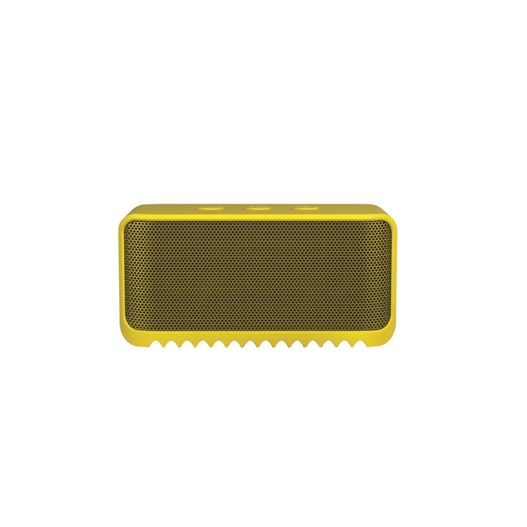

Altavoz Jabra
Precio 99.99€
Jabra Solemate™ Mini está diseñado para ir a cualquier parte. Es el altavoz inalámbrico nacido para moverse. Su tamaño ultracompacto y un sonido sorprendentemente grande lo convierten en el compañero perfecto para los viajes. A pesar de lo que le puedan decir los ojos, Jabra Solemate™ Mini tiene dos altavoces potentes y una batería que le permite disfrutar de 8 horas de reproducción. Escuche su música sin cables o utilice el práctico cable de la base. Resistente y listo para rodar, el Mini es resistente al polvo y las salpicaduras, y su revestimiento de goma lo protege de los arañazos y los golpes. Conéctelo a cualquier dispositivo y controle el Mini desde la otra punta de la sala por Bluetooth.